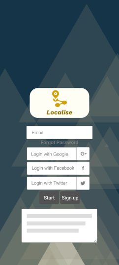
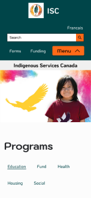
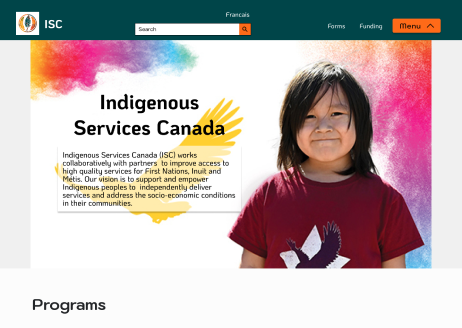
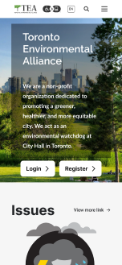
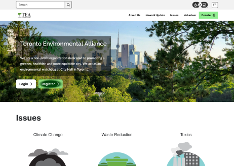

I’m David, Hello I am a UX/UI/FE designer based in Toronto. I want to create beautiful and simple experience for the people.
Localise A mobile travel app gives locals who knows more about the area and good places that they themselves would go to the power to curate for the travelers.  Indigenous Services Canada Redesign Indigenous Services Canada is part of the government website. The pages were too overwhelming and too corporate. My take on this case is to beautify it adding colours and better navigation.   TEA Website Design The goal of this project is to identify usability issues with the navigation and layout as well implementing features for higher retention in supporters’ participation.  